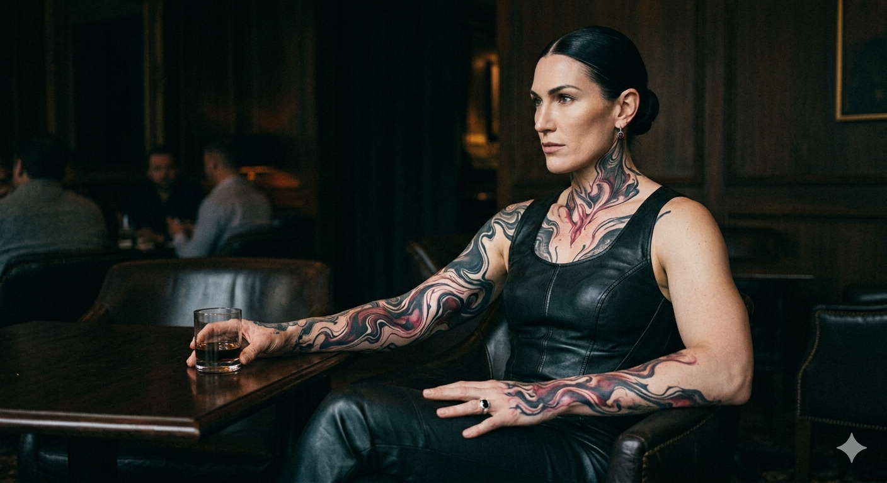

Baronesses

Five women, each holding her own portion of the Martial seat as if it were a barony in a smaller kingdom. Together they are the third faction. Apart they are five sovereigns who would each have ruined other houses if Tyrana hadn't built one to hold them all.
The Crimson Baronesses are organized by neither age nor blood — Martial does not produce blood — but by domain and specialty. Seleva is the matriarch in the precise sense the word should carry: she sits over the others, sets the faction's posture, decides which campaigns are worth the slow burn and which targets are worth the open move. Thalyne is the physical instrument when the faction needs one. Cassaryn is the strategist who maps the long curves Seleva pursues. Merixa runs the interrogation quarters of the west wing — the rooms where Martial converts what it captures. Lyssera, the youngest, is the cruelty that smiles.
None of the five would tolerate ranking against the others in public. Privately, the order is understood. Publicly, the faction speaks with one voice — Seleva's, and only Seleva's, when it speaks at all.
Open war is the First Line's posture and the Spear Sons' implicit threat. The Crimson Baronesses run the channels in between — the long pressure operations that other houses feel for years before recognizing what is happening to them. Marriages that arrive at conditions the recipient family did not realize they had agreed to. Disappearances that are noticed but never solved. Trade routes that fail at exactly the wrong season for exactly the wrong noble. Information that surfaces in the hands of the wrong faction during a Council vote, having traveled through six perfectly legitimate channels to reach there.
The faction's expertise is patience compounded by precision. They do not move when they could wait. They wait until the move is unanswerable. This is why other high families fear Faction III specifically — not because Faction III is the strongest of the three (it is not, the First Line has the senior fighters), but because Faction III is the one that operates while the others are watching the field and not the chessboard.
The interrogation rooms in the west wing belong to this faction. Captives delivered to House Martial who require what the in-house language calls resolution are not delivered to the First Line. They are delivered here.
The faction has two husbands of formal record at this generation: Daren, taken in by Seleva and conditioned over decades to the quiet, watchful presence the matriarch prefers in the rooms she occupies; and Korvan, claimed by Thalyne as a war prize from a campaign whose details the faction does not discuss in mixed company. Cassaryn, Merixa, and Lyssera have taken no formal husbands. None of the three is interested in the question. Whether they will ever take one is a matter the faction does not consider settled — or particularly urgent.
Daren and Korvan move through the faction's spaces as men who know the geography of every room and the precise nature of what is and is not permitted within it. They do not speak unbidden in the faction's presence. They do not need to.


